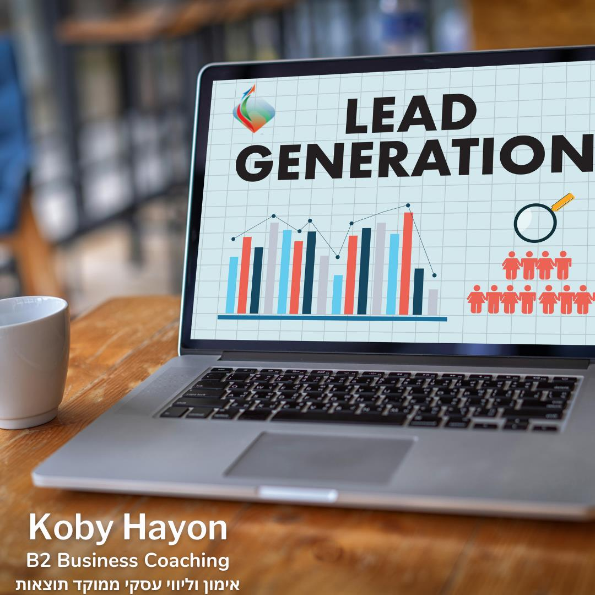

בואו נדבר על משפך שיווקי...
אחד הדברים שאני הכי אוהב לבנות לעסקים הוא משפך שיווקי, כלי עוצמתי שמשמעו שיטה סדורה ליצירת פניות של מתעניינים למוצר או השירות של העסק, אבל עצם הפנייה לא מספיקה - נדרש להעביר את הפניות דרך משפך של הבשלה שמטרתו ל"חמם" את המתעניין ולהביא אותו להבנה שהשירות או המוצר שלנו נותן מענה לצורך, יש המשתמשים במילה "כאב".
הבשלה ?
הרעיון שעומד אחרי משפך השיווק הוא שמתעניין אמנם פונה כאשר לו צורך, אבל על מנת שיבצע רכישה נדרש תהליך של יצירת אמון של המתעניין שאכן המענה שלנו הוא קודם כל איכותי ולאחר מכן שאנחנו אמינים ומקצועיים. וזה תהליך שעיקרו אינטראקציות עם המתעניין, מתן ערך, אינפורמציה, והכי חשוב - קשר אישי בין איש המכירות ובין המתעניין.
זה מה שעושה המשפך השיווקי. מעביר את המתעניין תהליך שלאחריו יענה לעצמו על מספר שאלות:
- מה הצורך המדויק שלי ?
- האם המוצר / שירות נותן לי מענה ?
- האם נותן השירות איכותי בעיניי ?
רק לאחר שיענה על כל השאלות האלה ויבין שאנחנו הפתרון לכאב, יבחר בנו המתעניין.
ככל שערך המוצר או השירות גבוהה יותר נצטרך יותר אינטראקציות כדי לתת למתעניין מספיק כלים למענה על השאלה.
מה האלמנטים של משפך שיווקי ?
- דף מידע בסיסי על השירות שלנו, בדרך כלל עמוד נחיתה, בו נאסוף מידע בסיסי על המתענינים (שם, טלפון, מייל).
- קמפיין שיווקי שיוצר תנועה לעמוד הנחיתה. החלק הקריטי בחלק זה הוא בחירת הפלטפורמה המדויקת לנו בהתאם לקהל היעד שלנו. להיות ממוקדים ולשים את כל הביצים בפלטפורמה המדויקת לנו.
- מערכת לניהול הפניות - נקראת גם CRM. מערכת שקולטת את כל הפניות ויוצרת מעקב אחר פעולות השיווק שאנחנו עושים מול המתעניין.
- מערכת דיוור ואינטראקציה - מייצרת תהליך אוטומטי, מסע לקוח, מתן ערך ומידע על השירות שלנו והתאמתו לצורך של המתעניין.
- טלפון - שיטה סדורה לשיחות עם המתעניין, Follow Up, מתן מענה אישית ותשובות. ככל שערך השירות או המוצר גבוה יותר, נצטרך יותר אינטראקציות אישיות.
- תסריטי שיחה והדרכה - חשוב להבנות את תהליך המכירה, שכל צוות המכירות יתן את אותו מידע, יהיה מסונכרן, יידע למנוע התנגדויות ולטפל בהן כאשר נוצרות. במסגרת זה חשוב להבנות את פגישות המכירה ולאמן את אנשי המכירות בסגירת עסקה (טלפונית, זום או פרונטאלית).
ועכשיו - כל שנותר הוא ללחוץ על מתג הפרסום, להתחיל להזרים פניות לחברה, לתקן תוך כדי תנועה ולחייך כל הדרך למכירה הבאה. בהצלחה
פורסם במקור בבלוג שלי ב-BizMakeBiz.